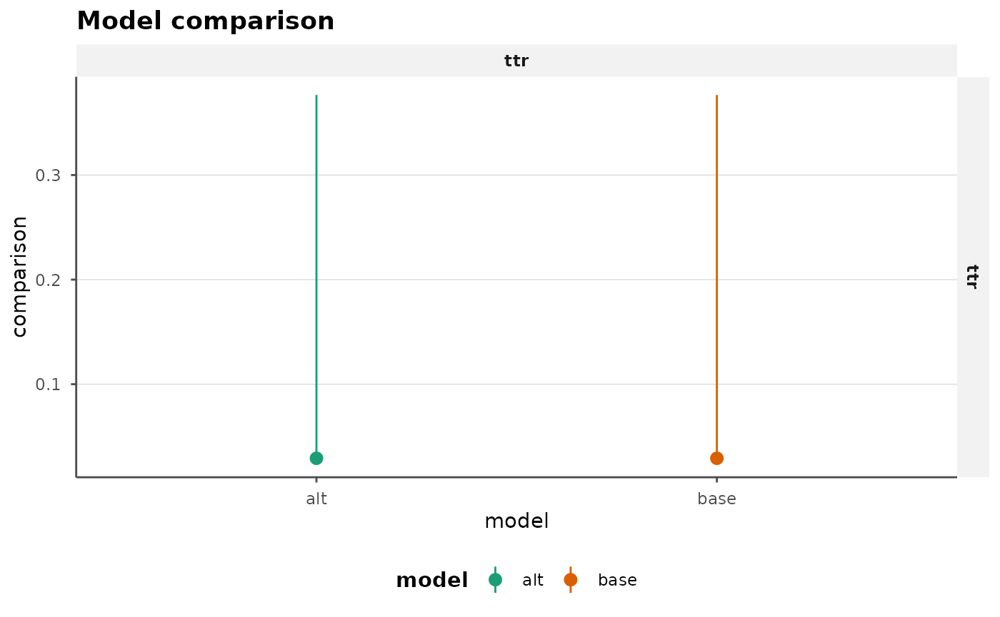

bsvarPost is a companion post-estimation package for
bsvars and bsvarSIGNs. It does not estimate
models itself. Instead, it adds a consistent layer for:
- cumulative dynamic multipliers via
cdm() - tidy extraction helpers
- model comparison utilities
-
ggplot2plotting methods - bridges to downstream workflows such as
tsibbleandAPRScenario - representative-model summaries and posterior audit helpers
The usual workflow is:
- estimate one or more models with
bsvarsorbsvarSIGNs - extract tidy posterior summaries or CDMs
- compare specifications or identifying assumptions
- move the results into publication-oriented tables and plots
Example: bsvars
The code chunks below are written as workflow examples. To keep the vignette lightweight, most of them are shown but not evaluated during the build. A small evaluated showcase appears at the end of the vignette so the rendered document still includes an actual table and plot.
library(bsvars)
library(bsvarPost)
data(us_fiscal_lsuw)
set.seed(1)
spec <- specify_bsvar$new(us_fiscal_lsuw, p = 1)
post <- estimate(spec, S = 100, thin = 1, show_progress = FALSE)
spec_alt <- specify_bsvar$new(us_fiscal_lsuw, p = 2)
post_alt <- estimate(spec_alt, S = 100, thin = 1, show_progress = FALSE)Compute cumulative dynamic multipliers:
Normalize by the sample standard deviation of the shocked variable only if that is the reporting convention you want:
cdm_scaled <- cdm(post, horizon = 8, scale_by = "shock_sd")Interpretation note:
-
scale_by = "shock_sd"is a reporting normalization - the default unscaled output remains the standard CDM object
Extract tidy tables for downstream analysis:
irf_tbl <- tidy_irf(post, horizon = 8)
cdm_tbl <- tidy_cdm(post, horizon = 8)
fevd_tbl <- tidy_fevd(post, horizon = 8)
fc_tbl <- tidy_forecast(post, horizon = 8)Plot tidy outputs with ggplot2 defaults:
ggplot2::autoplot(irf_tbl)
ggplot2::autoplot(cdm_tbl)
style_bsvar_plot(
ggplot2::autoplot(cdm_tbl),
preset = "paper",
palette = c("#1b9e77", "#d95f02")
)
template_bsvar_plot(
ggplot2::autoplot(irf_tbl),
family = "irf",
preset = "paper"
)Representative-model summaries are useful when you want a single draw that is close to the posterior center rather than pointwise medians that need not correspond to one structural model.
rep_irf <- median_target_irf(post, horizon = 8)
summary(rep_irf)
plot(rep_irf)Interpretation note:
-
median_target_*()gives you one coherent stored draw close to the posterior center - this is often preferable to reporting pointwise medians as if they were one structural model
Posterior hypothesis and magnitude statements can be evaluated directly from the response draws.
hypothesis_irf(post, variable = 1, shock = 1, horizon = 4, relation = ">", value = 0)
magnitude_audit(post, type = "cdm", variable = 1, shock = 1, horizon = 8, relation = ">", value = 0)
joint_hypothesis_irf(post, variable = 1, shock = 1, horizon = 0:2, relation = ">", value = 0)
simultaneous_irf(post, horizon = 8, variable = 1, shock = 1)
plot_simultaneous(post, type = "irf", horizon = 8, variable = 1, shock = 1)
plot_joint_hypothesis(
post,
type = "irf",
variable = 1,
shock = 1,
horizon = 0:2,
relation = ">",
value = 0
)
plot_hypothesis(post, type = "irf", variable = 1, shock = 1, horizon = 0:4, relation = ">", value = 0)You can also summarise the shape of the response distribution directly.
peak_tbl <- peak_response(
post,
type = "irf",
horizon = 8,
variable = 1,
shock = 1
)
peak_tbl
duration_tbl <- duration_response(
post,
type = "cdm",
horizon = 8,
variable = 1,
shock = 1,
relation = ">",
value = 0,
mode = "total"
)
duration_tbl
half_life_tbl <- half_life_response(
post,
type = "irf",
horizon = 8,
variable = 1,
shock = 1,
baseline = "peak"
)
half_life_tbl
time_tbl <- time_to_threshold(
post,
type = "cdm",
horizon = 8,
variable = 1,
shock = 1,
relation = ">",
value = 0
)
time_tblThese summaries also support cross-model comparison.
half_life_response() reports the time needed for a response
to fall to a chosen fraction of its peak or initial level, while
time_to_threshold() reports the first horizon at which a
threshold condition is met.
compare_peak_response(
p1 = post,
p2 = post_alt,
type = "irf",
horizon = 8,
variable = 1,
shock = 1
)
compare_duration_response(
p1 = post,
p2 = post_alt,
type = "cdm",
horizon = 8,
variable = 1,
shock = 1,
relation = ">",
value = 0,
mode = "total"
)
compare_half_life_response(
p1 = post,
p2 = post_alt,
type = "irf",
horizon = 8,
variable = 1,
shock = 1,
baseline = "peak"
)
compare_time_to_threshold(
p1 = post,
p2 = post_alt,
type = "cdm",
horizon = 8,
variable = 1,
shock = 1,
relation = ">",
value = 0
)
plot_compare_response(compare_peak_response(
p1 = post,
p2 = post_alt,
type = "irf",
horizon = 8,
variable = 1,
shock = 1
))Interpretation note:
-
reached_probis the posterior share of draws that satisfy the requested timing condition within the chosen horizon - if
reached_probis low, the associated timing summary is conditional on a relatively small subset of the posterior
Example: bsvarSIGNs
bsvarPost uses the same post-estimation interface for
sign-restricted models.
library(bsvarSIGNs)
library(bsvarPost)
data(optimism)
sign_irf <- matrix(c(0, 1, rep(NA, 23)), 5, 5)
spec <- specify_bsvarSIGN$new(
optimism * 100,
p = 4,
sign_irf = sign_irf
)
post <- estimate(spec, S = 100, thin = 1, show_progress = FALSE)
spec_alt <- specify_bsvarSIGN$new(
optimism * 100,
p = 2,
sign_irf = sign_irf
)
post_alt <- estimate(spec_alt, S = 100, thin = 1, show_progress = FALSE)Compute and summarize CDMs:
Extract tidy summaries:
irf_tbl <- tidy_irf(post, horizon = 12)
cdm_tbl <- tidy_cdm(post, horizon = 12)
fevd_tbl <- tidy_fevd(post, horizon = 12)bsvarPost also supports representative sign-restricted
summaries and restriction audits. median_target_*() selects
the stored draw closest to the posterior center.
most_likely_admissible_*() ranks stored admissible draws by
the reconstructed sign-restriction score available from
bsvarSIGNs.
rep_median <- median_target_irf(post, horizon = 12)
rep_mla <- most_likely_admissible_irf(post, horizon = 12)
summary(rep_median)
summary(rep_mla)
audit_tbl <- restriction_audit(post)
audit_tbl
plot_restriction_audit(audit_tbl)
diag_tbl <- acceptance_diagnostics(post)
diag_tbl
summary(diag_tbl)
compare_acceptance_diagnostics(p1 = post, p2 = post_alt)
plot_acceptance_diagnostics(diag_tbl, metrics = c("effective_sample_size", "kernel_zero_share"))Interpretation note:
-
most_likely_admissible_*()is only available forPosteriorBSVARSIGN -
restriction_audit()andmagnitude_audit()are post-estimation tools; they do not alter the identification scheme used in estimation
Magnitude restrictions in bsvarPost are post-estimation
summaries, not identification constraints.
magnitude_audit(post, type = "irf", variable = 2, shock = 1, horizon = 0, relation = ">", value = 0)Comparing models
Comparison helpers accept several posterior objects and return tidy comparison tables.
cmp_irf <- compare_irf(
p1 = post,
p2 = post_alt,
horizon = 8
)
cmp_cdm <- compare_cdm(
p1 = post,
p2 = post_alt,
horizon = 8
)
ggplot2::autoplot(cmp_irf)
ggplot2::autoplot(cmp_cdm)Restriction audits can also be compared directly across models.
compare_restrictions(
p1 = post,
p2 = post_alt,
restrictions = list(irf_restriction(variable = 1, shock = 1, horizon = 0, sign = 1))
)
plot_compare_restrictions(compare_restrictions(
p1 = post,
p2 = post_alt,
restrictions = list(irf_restriction(variable = 1, shock = 1, horizon = 0, sign = 1))
))Reporting helpers
Most bsvarPost outputs are already tidy tables, so a
first reporting layer can stay simple: render them directly to
knitr, gt, flextable, or CSV. Use
preset = "compact" when you want a narrower
publication-oriented column selection.
cmp_tbl <- compare_irf(
p1 = post,
p2 = post_alt,
horizon = 8
)
report_table(cmp_tbl, preset = "compact", digits = 3)
as_kable(cmp_tbl, caption = "Impulse-response comparison", digits = 3, preset = "compact")
write_bsvar_csv(cmp_tbl, tempfile(fileext = ".csv"), preset = "compact")
if (requireNamespace("gt", quietly = TRUE)) {
as_gt(cmp_tbl, caption = "Impulse-response comparison", digits = 3, preset = "compact")
}
if (requireNamespace("flextable", quietly = TRUE)) {
as_flextable(cmp_tbl, caption = "Impulse-response comparison", digits = 3, preset = "compact")
}
bundle <- report_bundle(
cmp_tbl,
caption = "Impulse-response comparison",
digits = 3,
preset = "compact"
)
bundle
bundle$plot
as_kable(bundle)
rep_bundle <- report_bundle(
median_target_irf(post, horizon = 8),
caption = "Representative impulse response"
)
rep_bundle$plot
as_kable(rep_bundle, preset = "compact")
diag_bundle <- report_bundle(
acceptance_diagnostics(post),
caption = "Acceptance diagnostics",
preset = "compact"
)
diag_bundle$plot
as_kable(diag_bundle)
joint_bundle <- report_bundle(
joint_hypothesis_irf(post, variable = 1, shock = 1, horizon = 0:2, relation = ">", value = 0),
caption = "Joint posterior statement",
preset = "compact"
)
joint_bundle$plot
as_kable(joint_bundle)
hd_bundle <- report_bundle(
tidy_hd_event(post, start = 1, end = 4),
preset = "compact"
)
hd_bundle$caption
hd_bundle$plot
as_kable(hd_bundle)
publish_bsvar_plot(cmp_tbl, preset = "paper")
publish_bsvar_plot(median_target_irf(post, horizon = 8), preset = "paper")
publish_bsvar_plot(diag_tbl, preset = "slides")
`report_table()` also applies publication-facing column labels such as
`Posterior probability`, `Median half-life`, and `Critical value`.A practical rule of thumb is:
- use
report_table(..., preset = "compact")for paper tables - use
report_bundle()when you want the natural table-plus-plot pair - use
publish_bsvar_plot()when you want family-aware styling without manual theme plumbing
Rendered showcase
This final chunk is intentionally small and evaluated during the vignette build so the rendered document includes one actual table and one actual plot.
library(bsvars)
library(bsvarPost)
data(us_fiscal_lsuw)
set.seed(11)
demo_spec <- specify_bsvar$new(us_fiscal_lsuw, p = 1)
#> The identification is set to the default option of lower-triangular structural matrix.
demo_post <- estimate(demo_spec, S = 5, thin = 1, show_progress = FALSE)
demo_cmp <- compare_peak_response(
base = demo_post,
alt = demo_post,
type = "irf",
horizon = 2,
variable = 1,
shock = 1
)
as_kable(demo_cmp, preset = "compact", digits = 3)| Model | Variable | Shock | Mean value | Median value | Lower value | Upper value | Mean horizon | Median horizon | Lower horizon | Upper horizon |
|---|---|---|---|---|---|---|---|---|---|---|
| base | ttr | ttr | 0.219 | 0.029 | 0.028 | 0.377 | 0.6 | 0 | 0 | 1.36 |
| alt | ttr | ttr | 0.219 | 0.029 | 0.028 | 0.377 | 0.6 | 0 | 0 | 1.36 |
publish_bsvar_plot(demo_cmp, preset = "paper")
Historical decomposition events
For event studies, bsvarPost can aggregate historical
decomposition draws over a selected window and rank shocks by their
cumulative contribution.
hd_event <- tidy_hd_event(post, start = 1, end = 4)
hd_event
shock_ranking(post, start = 1, end = 4, ranking = "absolute")
plot_hd_event(post, start = 1, end = 4)
plot_shock_ranking(post, start = 1, end = 4, ranking = "absolute", top_n = 5)
style_bsvar_plot(
plot_shock_ranking(post, start = 1, end = 4, ranking = "absolute", top_n = 5),
preset = "slides"
)
annotate_bsvar_plot(
plot_hd_event(post, start = 1, end = 4),
title = "Event-window contributions",
xintercept = 1
)These event summaries can also be compared across fitted models.
cmp_hd_event <- compare_hd_event(p1 = post, p2 = post_alt, start = 1, end = 4)
cmp_hd_event
tsibble bridge
If tsibble is installed, tidy outputs can be converted
directly:
library(tsibble)
fc_tbl <- tidy_forecast(post, horizon = 8)
fc_tsbl <- as_tsibble_post(fc_tbl)For IRF, CDM, and FEVD outputs, horizon is used as the
index. For forecast, shock, and historical decomposition outputs,
time is used when available.
APRScenario bridge
APRScenario uses forecast summaries with columns
hor, variable, lower,
center, and upper. bsvarPost
provides converters in both directions.
fc_tbl <- tidy_forecast(post, horizon = 8)
apr_tbl <- as_apr_cond_forc(
fc_tbl,
origin = as.Date("2024-01-01"),
frequency = "quarter"
)
back_to_tidy <- tidy_apr_forecast(apr_tbl)If APRScenario is installed, you can also forward to its
matrix generator:
mats <- apr_gen_mats(post, specification = spec)